左=静岡20cm SR（現行ベスト） / 右=生成（色補正後）
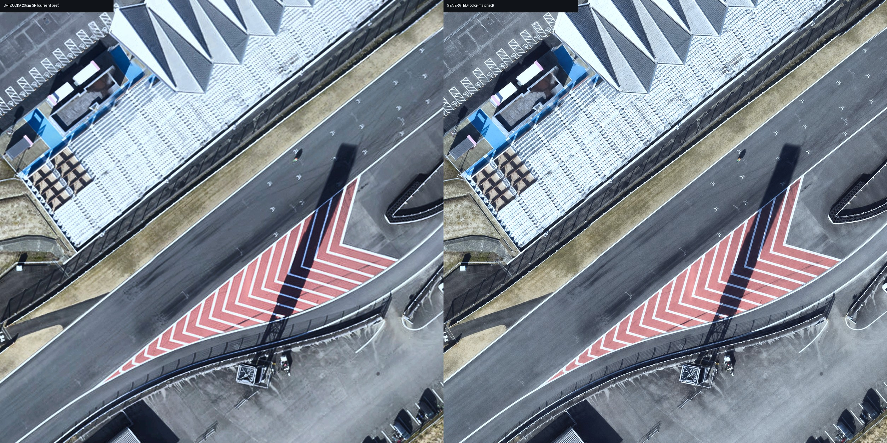
#01 on-track d=0.0m — MUSIQ: SR 59.4 / 生成 67.89
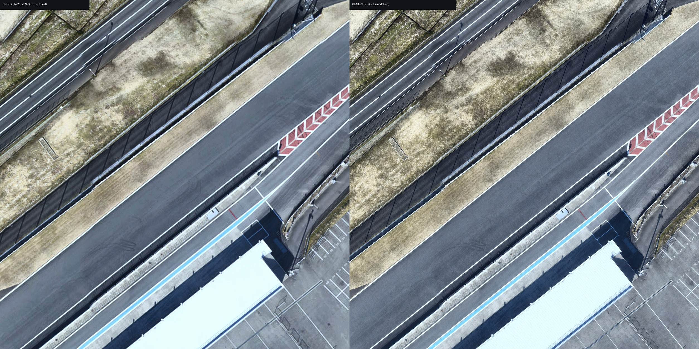
#02 on-track d=569.6m — MUSIQ: SR 57.3 / 生成 66.04
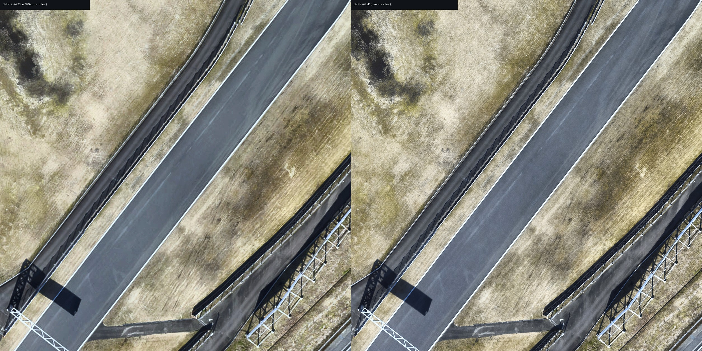
#03 on-track d=1139.1m — MUSIQ: SR 56.66 / 生成 59.02
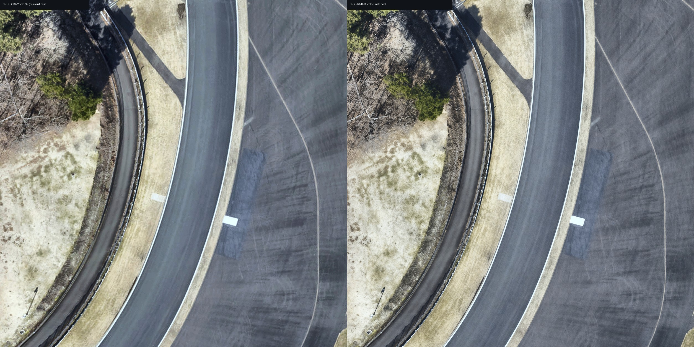
#04 on-track d=1708.7m — MUSIQ: SR 57.91 / 生成 60.63
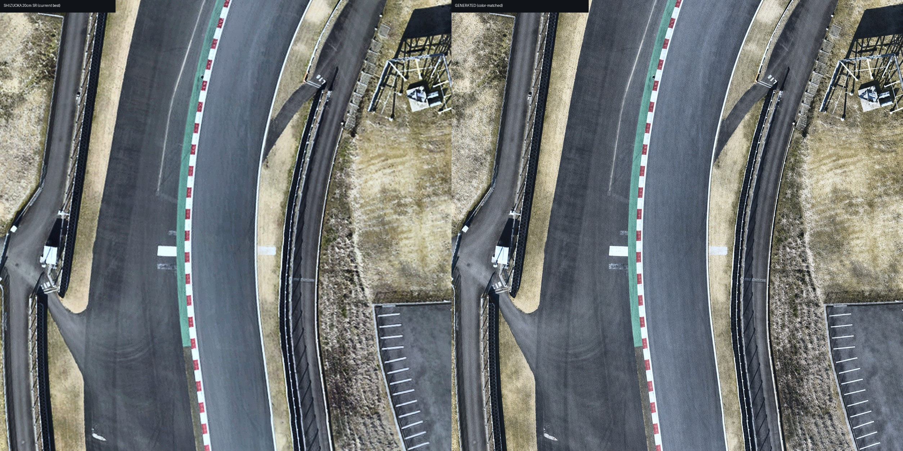
#05 on-track d=2278.2m — MUSIQ: SR 60.49 / 生成 65.04
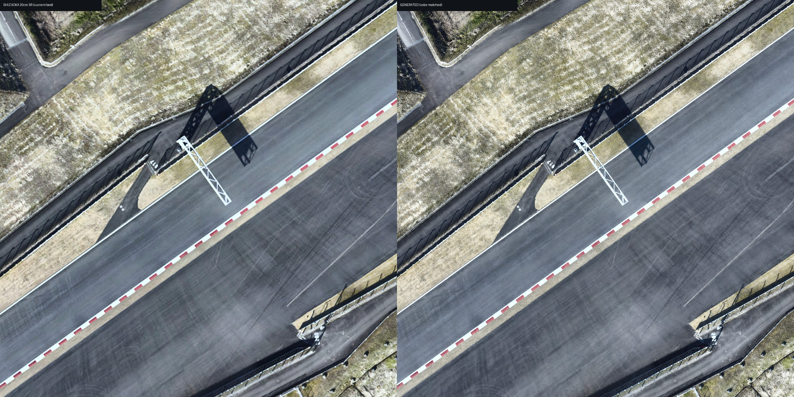
#06 on-track d=2847.8m — MUSIQ: SR 59.72 / 生成 65.17
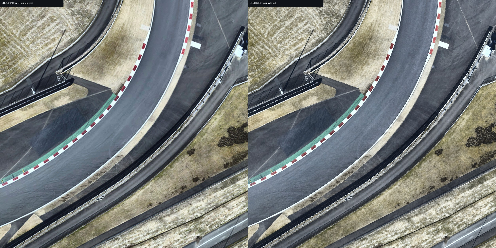
#07 on-track d=3417.3m — MUSIQ: SR 61.48 / 生成 70.1
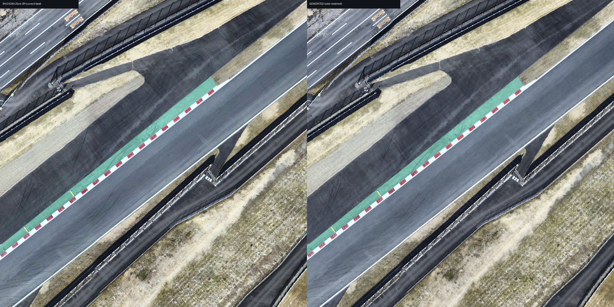
#08 on-track d=3986.9m — MUSIQ: SR 59.08 / 生成 66.4
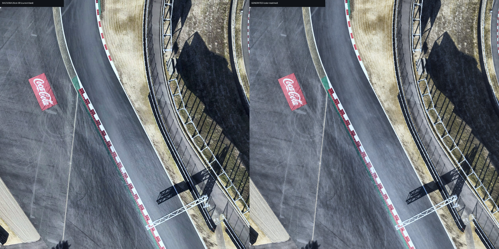
#09 on-track (既存トライアル地点) d=1519.2m — MUSIQ: SR 50.08 / 生成 65.09
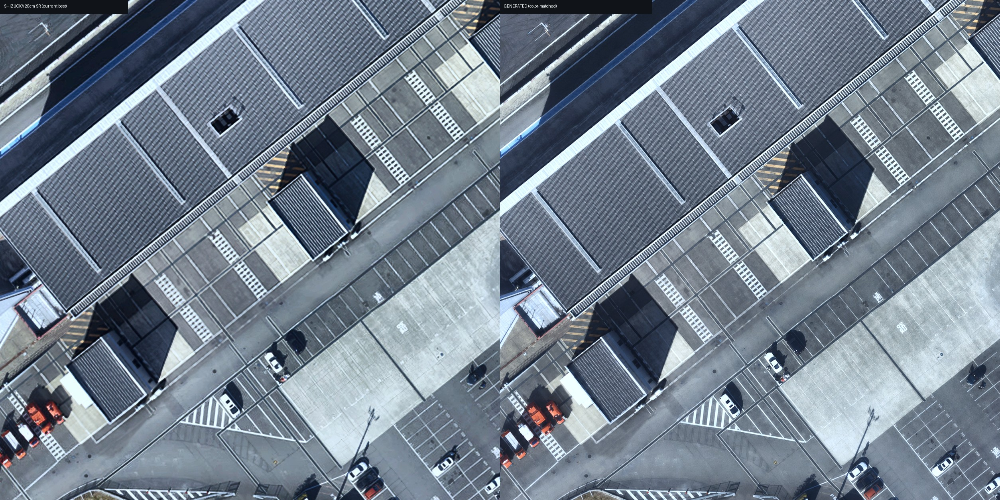
#10 off-track d=227.8m — MUSIQ: SR 53.63 / 生成 63.93
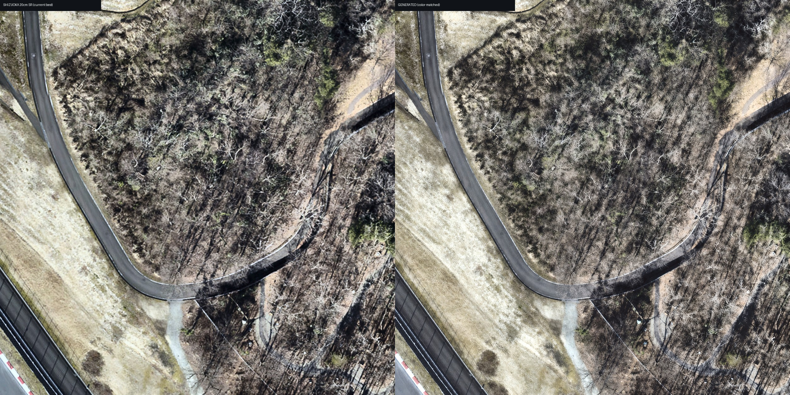
#11 off-track d=2050.4m — MUSIQ: SR 56.94 / 生成 66.77
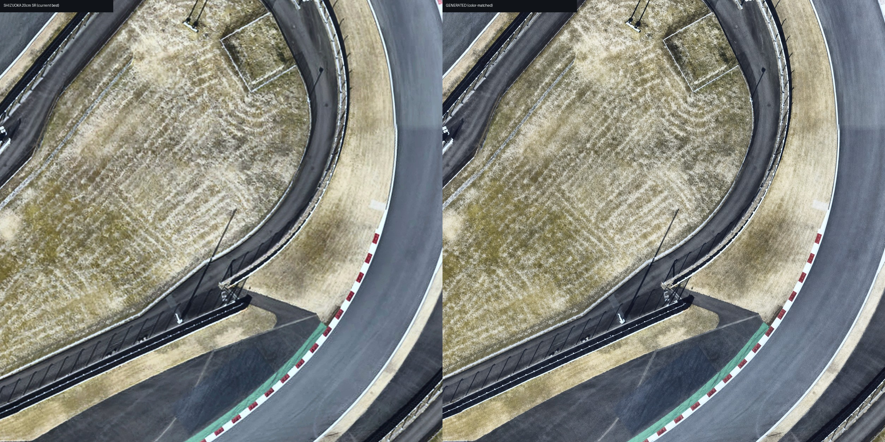
#12 off-track d=3645.1m — MUSIQ: SR 59.16 / 生成 67.32